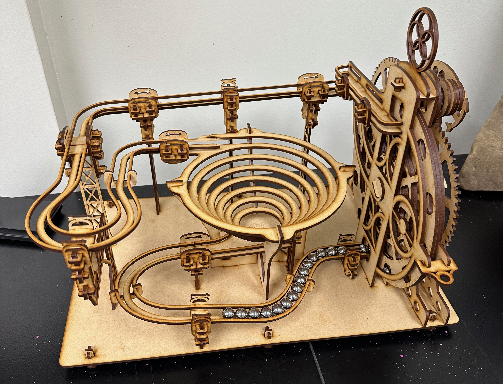

Learn More About the MNU Maker Lab!
Manufacturing is increasingly localized and there is a growing need for technologically skilled workers.
STEM careers rely on employees who can think abstractly and creatively. The MNU Maker Lab provides a space for students to build skills useful in the addictive and subtractive manufacturing market.
Reach out to Dr. Rion Taylor if you are interested!
Email: rgtaylor@mnu.edu